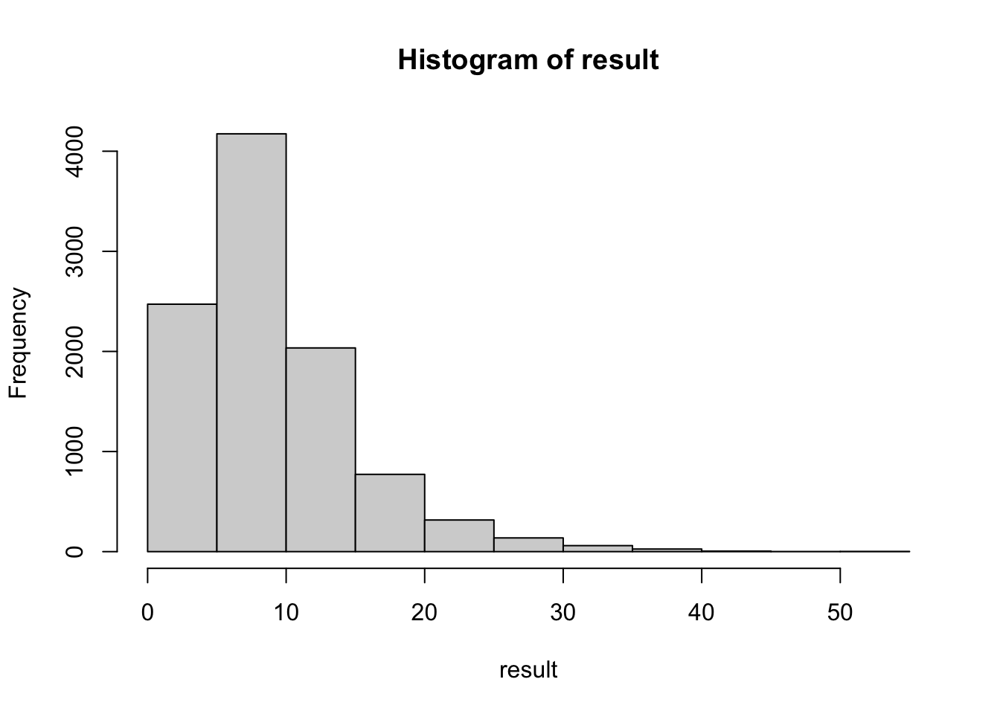
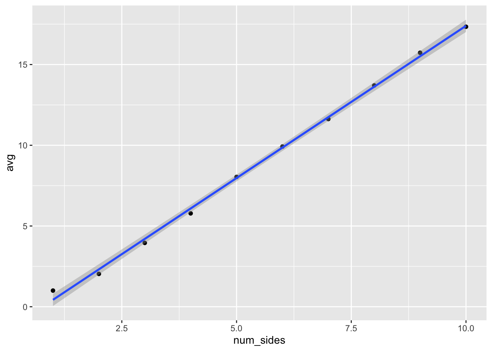
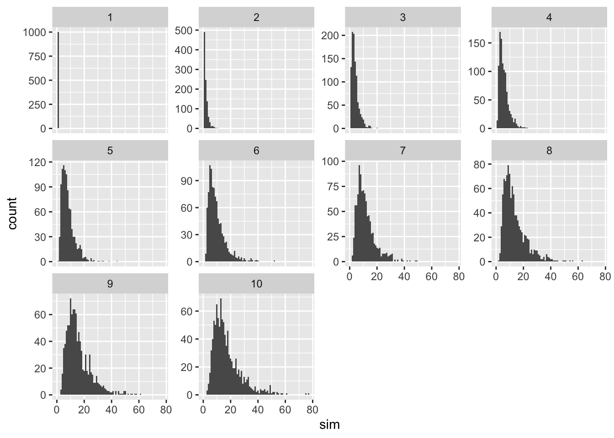

# https://fivethirtyeight.com/features/can-you-get-the-gloves-out-of-the-box/
die <- 1:6
die <- sample(die, replace = TRUE)
die <- sample(die, replace = TRUE)
die <- sample(die, replace = TRUE)
## etc.
die[1] 4 5 5 5 4 5die <- 1:6
n <- 0
while (length(unique(die)) > 1) {
die <- sample(die, replace = TRUE)
n <- n + 1
}
die[1] 4 4 4 4 4 4n[1] 6simulation <- function(num_sides = 6) {
die <- 1:num_sides
n <- 0
while (length(unique(die)) > 1) {
die <- sample(die, replace = TRUE)
n <- n + 1
}
return(n)
}
result <- replicate(1e4, simulation())
mean(result)[1] 9.6289hist(result)
library(tidyverse)── Attaching packages ─────────────────────────────────────── tidyverse 1.3.2 ──
✔ ggplot2 3.3.6 ✔ purrr 0.3.4
✔ tibble 3.1.8 ✔ dplyr 1.0.10
✔ tidyr 1.2.1 ✔ stringr 1.4.1
✔ readr 2.1.2 ✔ forcats 0.5.2
── Conflicts ────────────────────────────────────────── tidyverse_conflicts() ──
✖ dplyr::filter() masks stats::filter()
✖ dplyr::lag() masks stats::lag()
result <- map_dbl(1:1e4, ~ simulation())
mean(result)[1] 9.6573accumulate(1:10, ~ sample(., replace = TRUE), .init = 1:6)[[1]]
[1] 1 2 3 4 5 6
[[2]]
[1] 6 6 3 2 3 1
[[3]]
[1] 6 2 1 2 6 2
[[4]]
[1] 1 2 1 1 1 2
[[5]]
[1] 1 1 1 1 1 2
[[6]]
[1] 1 1 1 1 1 1
[[7]]
[1] 1 1 1 1 1 1
[[8]]
[1] 1 1 1 1 1 1
[[9]]
[1] 1 1 1 1 1 1
[[10]]
[1] 1 1 1 1 1 1
[[11]]
[1] 1 1 1 1 1 1simulate_with_purrr <- function(num_sides = 6) {
rolls <- accumulate(1:1e3, function(x, ...) {
die <- sample(x, replace = TRUE)
if (length(unique(die)) == 1) {
done(die)
} else {
die
}
}, .init = 1:num_sides)
return(length(rolls) - 1)
}
result <- replicate(100, simulate_with_purrr(50))
result [1] 33 77 154 111 86 105 60 84 48 134 238 54 30 104 49 153 119 53
[19] 51 68 96 126 48 341 108 64 60 56 64 208 100 172 44 57 53 81
[37] 103 75 29 202 65 138 72 50 98 91 66 68 57 80 76 42 204 80
[55] 113 181 171 126 114 191 53 112 109 114 32 169 45 76 75 139 89 128
[73] 82 90 140 121 79 110 34 52 83 97 115 161 80 62 59 75 173 60
[91] 88 57 94 92 71 136 117 82 113 56df <- crossing(num_sides = 1:10, trial = 1:1000) %>%
mutate(sim = map_dbl(num_sides, simulate_with_purrr))
df# A tibble: 10,000 × 3
num_sides trial sim
<int> <int> <dbl>
1 1 1 1
2 1 2 1
3 1 3 1
4 1 4 1
5 1 5 1
6 1 6 1
7 1 7 1
8 1 8 1
9 1 9 1
10 1 10 1
# … with 9,990 more rowsdf %>%
group_by(num_sides) %>%
summarize(avg = mean(sim)) %>%
ggplot(aes(num_sides, avg)) +
geom_point() +
geom_smooth(method = lm)`geom_smooth()` using formula 'y ~ x'
df_avg <- df %>%
group_by(num_sides) %>%
summarize(avg = mean(sim))
lm(avg ~ num_sides, data = df_avg %>% filter(num_sides > 1))
Call:
lm(formula = avg ~ num_sides, data = df_avg %>% filter(num_sides >
1))
Coefficients:
(Intercept) num_sides
-1.806 1.933 df %>%
ggplot(aes(x = sim)) +
geom_histogram(binwidth = 1) +
facet_wrap(~ num_sides, scales = "free_y")